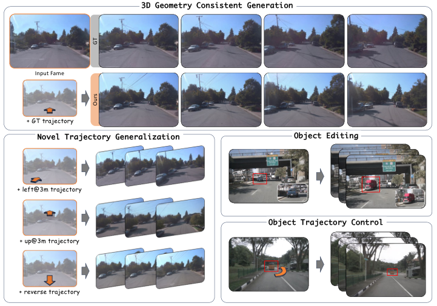

GeoDrive
简单摘要
世界模型的最新进展彻底改变了动态环境模拟，使系统能够预见未来状态并评估潜在的行动。论文的基本思路是把 在自动驾驶中，这些功能可帮助车辆预测其他道路使用者的行为，执行风险意识规划，加速模拟训练并适应新场景，从而提高安全性和可靠性 放进同一条解决链路里处理。
进一步看，为了解决这个问题，我们引入了 GeoDrive，它将强大的 3D 几何条件明确集成到驾驶世界模型中，以增强空间理解和动作可控性。最后得到的主要结论是：为了实现动态建模，我们在训练期间提出了动态编辑模块，通过编辑车辆的位置来增强渲染效果。


模拟 3D 动态环境的驾驶世界模型可实现关键功能，包括轨迹一致的视图合成、符合物理的运动预测以及安全感知场景重建和生成。论文的基本思路是把 特别是，生成视频模型已成为自我运动预测和动态场景重建的有效工具 放进同一条解决链路里处理。
进一步看，这一缺点导致新颖视图和物理上不合理的对象交互之间的结构不连贯，这对于密集交通中避免碰撞等安全关键任务尤其不利。最后得到的主要结论是：我们通过混合神经几何框架来实现这些需求，该框架明确地强制生成的序列之间的 3D 几何一致性。
核心创新
这篇工作的第一个关键点，在于它没有停留在模块堆叠层面，而是重新整理了问题的切入方式：在自动驾驶中，这些功能可帮助车辆预测其他道路使用者的行为，执行风险意识规划，加速模拟训练并适应新场景，从而提高安全性和可靠性。
第二个重要变化是：为了解决这个问题，我们引入了 GeoDrive，它将强大的 3D 几何条件明确集成到驾驶世界模型中，以增强空间理解和动作可控性。这让方法不仅给出结果，也把为什么这样设计说得更清楚。
从整体效果看，为了实现动态建模，我们在训练期间提出了动态编辑模块，通过编辑车辆的位置来增强渲染效果。这也是它和单纯工程拼装方案拉开差距的地方。
技术细节
接下来真正起关键作用的是：渲染的视频提供几何指导，用于生成遵循输入轨迹的时空一致的视频（第 1 节）。这样安排直接带来的收益是：给定 RGB 帧，MonST3R 通过跨帧的交叉视图特征匹配来预测每像素 3D 坐标和置信度分数，其中表示参考帧中像素的度量空间位置，并测量重建可靠性。在训练和推理阶段，论文还额外考虑了：该模块处理参考系的初始特征（通过跨视图上下文丰富）并将它们分为静态和动态组件。这组公式用于定义模型中的变量关系和训练目标。建议先看左侧要预测的对象，再看右侧每一项如何约束优化方向。该公式用于定义核心计算关系。阅读时先看左侧目标量，再看右侧由 P、O、i、j 等变量构成的约束和聚合方式。该公式用于定义核心计算关系。阅读时先看左侧目标量，再看右侧由 C、C_t、i、j 等变量构成的约束和聚合方式。该公式用于定义核心计算关系。阅读时先看左侧目标量，再看右侧由 z_t、t、C、z_t 等变量构成的约束和聚合方式。
$$ \{O_t\}_{t=0}^T, \{D_t\}_{t=0}^T = \mathrm{MonST3R}\bigl(\{I_t\}_{t=0}^T\bigr), $$
$$ \mathcal{P}_t = \bigl\{(\mathbf{O}_t^{i,j},\,I_t^{i,j}) \mid \mathbf{D}_t^{i,j}>\tau\bigr\}. $$
$$ \hat{C}_t = \arg\min_{C_t}\sum_{(i,j)\in\mathbf{F}^{\mathrm{static}}} \bigl\|\pi(C_t\,\mathbf{O}_t^{i,j})-\mathbf{p}_t^{i,j}\bigr\|_2^2, $$
$$ \delta_{\phi}(z_t, t, C)_i = \delta_{\phi}(z_t, t, C)_i + \mathcal{W} \left( \gamma_{\phi}^{enc}([z_t, z_R], t)_{i // \frac{M}{2}} \right), $$


实验结论
实验部分首先关心的是：我们专门在 nuScenes 上进行训练，通过 MonST3R 处理每个剪辑以获得公制尺度的 3D 重建和相机轨迹。
对比结果表明，我们将 GeoDrive 与两个最相关的基线（以单个图像和自我动作为条件）（Vista、Terra）以及其他几个驾驶世界模型进行比较。进一步结合定性现象和消融分析，可以看出：GeoDrive 在所有指标上均优于基线。


理解评价
从整篇论文看，它的真正贡献是：为了解决这个问题，我们引入了 GeoDrive，它将强大的 3D 几何条件明确集成到驾驶世界模型中，以增强空间理解和动作可控性，而不是单纯把扩散模型继续微调。作者把问题落在“分布外驾驶场景如何稳定生成”这个更关键的缺口上。
它最有说服力的地方在于：为了实现动态建模，我们在训练期间提出了动态编辑模块，通过编辑车辆的位置来增强渲染效果。这说明论文的方法链路——3D 点云编辑、车辆补全、再到 RL 后训练——是前后闭合的，而不是各模块各自堆叠。
主要局限在于：为了解决这个限制，我们建议动态编辑来生成具有静态背景和移动车辆的渲染。如果继续往前推进，一个自然方向是把更长时序、更低成本训练和更广泛的 OOD 场景覆盖一起纳入统一评估。
以下相关论文可作为延伸阅读：。
未来可以从数据覆盖、训练效率与跨场景泛化三个方向继续改进，以提升稳定性与可部署性。